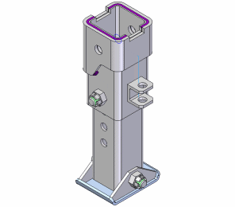

This tutorial demonstrates a typical workflow for creating weldment-related features with Solid Edge. It provides step-by-step instructions for creating weld features such as fillet, stitch, and groove welds using a Solid Edge assembly document. Creation of weld preparation and post-weld machining features, such as chamfers and cutouts, is also covered.
This is an intermediate tutorial. You might find it easier to follow if you first complete the Introduction to Part Modeling tutorial.
Estimated time to complete: 20 minutes
